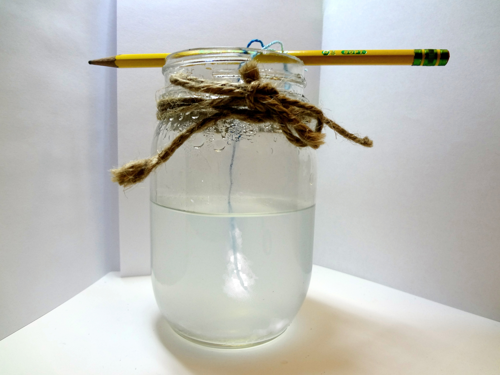
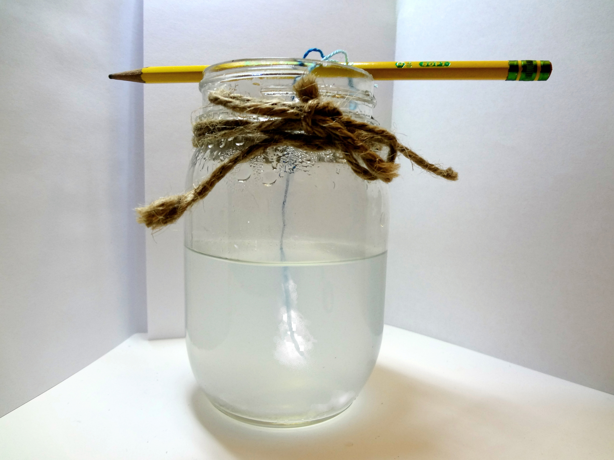
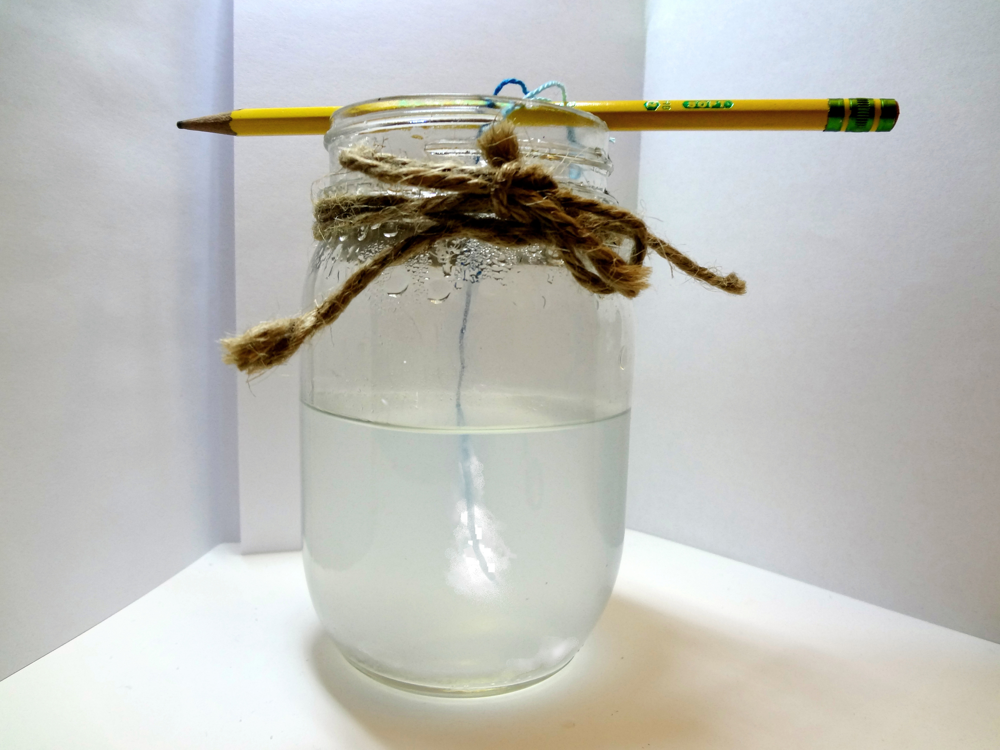

This is my Salt Art Project. Using a randomly chosen material, my project was to relate this material and its forms to the theme and topic of education. Education is a controversial topic in the world of academia and I've have created an exposition of salt to deliver a message. As we use salt and mix it with water, you can see it changes the colour of water, just slightly. Metaphorically speaking, education impacts humans the same way as salt changes water. While we let it sit, salt crystals begin to form on the string. As humans get older, we become more educated and are shaped by what we learn academically, socially, and culturally. This Salt Project explains that education comes in different forms and changes humans as time progresses.
